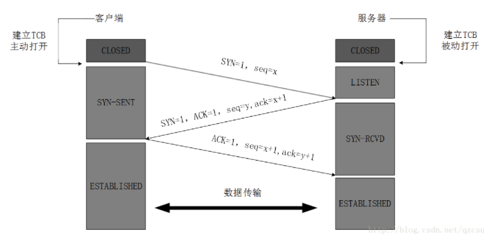
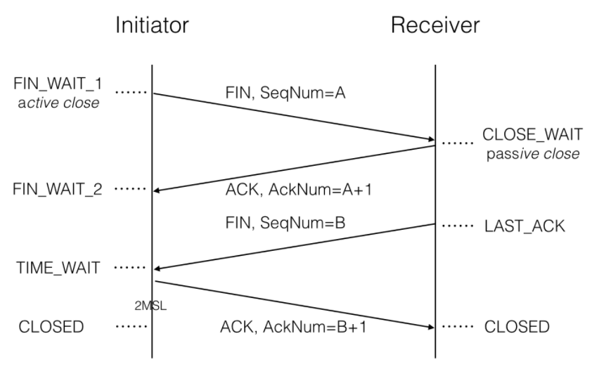

<!DOCTYPE html>
<html>
<head><meta name="generator" content="Hexo 3.8.0">
  <meta charset="utf-8">
  
  <title>TCP与UDP | MapleStory</title>
  <meta name="viewport" content="width=device-width, initial-scale=1, maximum-scale=1">
  
  <meta name="keywords" content="计算机网络">
  
  
  
  
  <meta name="description" content="TCPTCP 的连接与断开TCP与UDP部分感觉与网络考研书上讲的比较接近，重点内容包括TCP的三次握手、四次挥手、TCP可靠传输、流量控制、拥塞控制">
<meta name="keywords" content="计算机网络">
<meta property="og:type" content="article">
<meta property="og:title" content="TCP与UDP">
<meta property="og:url" content="http://yoursite.com/2018/11/11/TCP与UDP/index.html">
<meta property="og:site_name" content="MapleStory">
<meta property="og:description" content="TCPTCP 的连接与断开TCP与UDP部分感觉与网络考研书上讲的比较接近，重点内容包括TCP的三次握手、四次挥手、TCP可靠传输、流量控制、拥塞控制">
<meta property="og:locale" content="zh-cn">
<meta property="og:image" content="http://yoursite.com/2018/11/11/TCP与UDP/1538287170847.png">
<meta property="og:image" content="http://yoursite.com/2018/11/11/TCP与UDP/1538553330239.png">
<meta property="og:updated_time" content="2018-12-07T13:09:24.376Z">
<meta name="twitter:card" content="summary">
<meta name="twitter:title" content="TCP与UDP">
<meta name="twitter:description" content="TCPTCP 的连接与断开TCP与UDP部分感觉与网络考研书上讲的比较接近，重点内容包括TCP的三次握手、四次挥手、TCP可靠传输、流量控制、拥塞控制">
<meta name="twitter:image" content="http://yoursite.com/2018/11/11/TCP与UDP/1538287170847.png">
  
  <link rel="icon" href="/css/images/favicon.ico">
  
    <link href="//fonts.googleapis.com/css?family=Source+Code+Pro" rel="stylesheet" type="text/css">
  
  <link href="https://fonts.googleapis.com/css?family=Open+Sans|Montserrat:700" rel="stylesheet" type="text/css">
  <link href="https://fonts.googleapis.com/css?family=Roboto:400,300,300italic,400italic" rel="stylesheet" type="text/css">
  <link href="//cdn.bootcss.com/font-awesome/4.6.3/css/font-awesome.min.css" rel="stylesheet">
  <style type="text/css">
    @font-face{font-family:futura-pt;src:url(https://use.typekit.net/af/9749f0/00000000000000000001008f/27/l?subset_id=2&fvd=n5) format("woff2");font-weight:500;font-style:normal;}
    @font-face{font-family:futura-pt;src:url(https://use.typekit.net/af/90cf9f/000000000000000000010091/27/l?subset_id=2&fvd=n7) format("woff2");font-weight:500;font-style:normal;}
    @font-face{font-family:futura-pt;src:url(https://use.typekit.net/af/8a5494/000000000000000000013365/27/l?subset_id=2&fvd=n4) format("woff2");font-weight:lighter;font-style:normal;}
    @font-face{font-family:futura-pt;src:url(https://use.typekit.net/af/d337d8/000000000000000000010095/27/l?subset_id=2&fvd=i4) format("woff2");font-weight:400;font-style:italic;}</style>
    
  <link rel="stylesheet" id="athemes-headings-fonts-css" href="//fonts.googleapis.com/css?family=Yanone+Kaffeesatz%3A200%2C300%2C400%2C700&amp;ver=4.6.1" type="text/css" media="all">

  <link rel="stylesheet" id="athemes-headings-fonts-css" href="//fonts.googleapis.com/css?family=Oswald%3A300%2C400%2C700&amp;ver=4.6.1" type="text/css" media="all">
  <link rel="stylesheet" href="/css/style.css">

  <script src="/js/jquery-3.1.1.min.js"></script>

  <!-- Bootstrap core CSS -->
  <link rel="stylesheet" href="/css/bootstrap.css">
  <link rel="stylesheet" href="/css/fashion.css">
  <link rel="stylesheet" href="/css/glyphs.css">

</head>
</html>


  <body data-spy="scroll" data-target="#toc" data-offset="50">


  


<header id="allheader" class="site-header" role="banner">
  <div class="clearfix container">
      <div class="site-branding">

          <h1 class="site-title">
            
              <a href="/" title="MapleStory" rel="home"> MapleStory </a>
            
          </h1>
          
          
            <div class="site-description">CS:Dalian University of technology</div>
          
            
          <nav id="main-navigation" class="main-navigation" role="navigation">
            <a class="nav-open">Menu</a>
            <a class="nav-close">Close</a>

            <div class="clearfix sf-menu">
              <ul id="main-nav" class="menu sf-js-enabled sf-arrows" style="touch-action: pan-y;">
                    
                      <li class="menu-item menu-item-type-custom menu-item-object-custom menu-item-home menu-item-1663"> <a class="" href="/">Home</a> </li>
                    
              </ul>
            </div>
          </nav>

      </div>
  </div>
</header>


  <div id="container">
    <div id="wrap">
            
      <div id="content" class="outer">
        
          <section id="main" style="float:none;"><article id="post-TCP与UDP" style="width: 66%; float:left;" class="article article-type-post" itemscope="" itemprop="blogPost">
  <div id="articleInner" class="clearfix post-1016 post type-post status-publish format-standard has-post-thumbnail hentry category-template-2 category-uncategorized tag-codex tag-edge-case tag-featured-image tag-image tag-template">
    
    
      <header class="article-header">
        
  
    <h1 class="thumb" itemprop="name">
      TCP与UDP
    </h1>
  

      </header>
    
    <div class="article-meta">
      
	<a href="/2018/11/11/TCP与UDP/" class="article-date">
	  <time datetime="2018-11-11T11:49:28.000Z" itemprop="datePublished">十一月 11, 2018</time>
	</a>

       
      
	<span id="busuanzi_container_page_pv">
	  本文总阅读量<span id="busuanzi_value_page_pv"></span>次
	</span>

    </div>
    <div class="article-entry" itemprop="articleBody">
      
        <h2 id="TCP"><a href="#TCP" class="headerlink" title="TCP"></a>TCP</h2><h3 id="TCP-的连接与断开"><a href="#TCP-的连接与断开" class="headerlink" title="TCP 的连接与断开"></a>TCP 的连接与断开</h3><p>TCP与UDP部分感觉与网络考研书上讲的比较接近，重点内容包括TCP的三次握手、四次挥手、TCP可靠传输、流量控制、拥塞控制</p>
<a id="more"></a>
<h4 id="TCP三次握手"><a href="#TCP三次握手" class="headerlink" title="TCP三次握手"></a>TCP三次握手</h4><p></p>
<p>第一步：客户机的TCP首先向服务器的TCP发送一个请求连接报文段。这个特殊的报文段不包含应用层数据，其中首部的SYN标志位被置位1.另外客户机会随机选择一个起始序号<code>seq=x</code></p>
<p>第二步：服务器的TCP收到请求的报文后，如同意建立连接，就向客户机发回确认，并为该TCP分配TCP缓存和变量。在确认报文段中，SYN和ACK被置为1，确认号的字段值为x+1</p>
<p>第三步：客户机收到确认报文段后向服务器给出确认，并且给该连接分配内存和变量，ACK置1，确认号为y+1</p>
<h4 id="为什么TCP进行三次握手？"><a href="#为什么TCP进行三次握手？" class="headerlink" title="为什么TCP进行三次握手？"></a>为什么TCP进行三次握手？</h4><p>本质上TCP协议的三次握手需要解决这样一个问题：在不可靠的信道上（IP数据报尽最大努力交付）完成可靠的数据传输。而全双工的连接建立需要双方的连接请求和确认，这样最少需要使用三次握手才能建立连接</p>
<p>至于为什么三次是最少，客户端服务器二者最少都需要向对方发送一个同步报文（SYN），但是如果只有这两次握手，服务器就只能接受连接，无法确认连接；设想如果服务器接受一个SYN报文就建立连接，那客户端因为阻塞原因重发了N个SYN同步报文 ，服务器每接受到一个就需要建立一次连接，这是不堪设想的。所以只有当服务器接收到客户端第二次的<code>ack</code>确认报文后才会建立连接</p>
<h4 id="TCP四次挥手断开连接"><a href="#TCP四次挥手断开连接" class="headerlink" title="TCP四次挥手断开连接"></a>TCP四次挥手断开连接</h4><p></p>
<ul>
<li>客户端请求断开FIN1（客户端无更多数据）</li>
<li>服务器ACK确认（收到，但是仍有数据传输）</li>
<li>服务器请求断开FIN2（服务器无更多数据）</li>
<li>客户端ACK确认 </li>
</ul>
<h4 id="四次挥手中的状态"><a href="#四次挥手中的状态" class="headerlink" title="四次挥手中的状态"></a>四次挥手中的状态</h4><ul>
<li><strong>FINWAIT1</strong> :  当客户端在<code>established</code>状态想要断开连接，主动向服务器器发送FIN报文，此时该<code>socket</code>便进入<code>FINWAIT1</code>状态</li>
<li><strong>FINWAIT2</strong>:  这时客户端已经收到对方的确认<code>ack</code>,但是服务器可能还有数据未发送完成，还需要接受对方的数据，处于半连接（半关闭）状态</li>
<li><strong>TIME_WAIT</strong>:  客户端接受到了对方的确认报文、也接收到了对方的<code>fin</code>报文，现在发出了最后的确认报文，进入一个<code>2MSL</code>的等待状态，如果等待状态没有重发便进入结束状态</li>
<li><strong>CLOSE_WAIT</strong> :  服务器确认了客户端的终止请求，还有数据待发送</li>
<li><strong>LAST_CHECK</strong>:  服务器方发送FIN后，最后等待对方的ACK报文</li>
<li><strong>CLOSED</strong> : 连接中断</li>
</ul>
<h4 id="为什么需要四次握手"><a href="#为什么需要四次握手" class="headerlink" title="为什么需要四次握手"></a>为什么需要四次握手</h4><p>TCP是全双工的协议，通信中双方都需要知道对方的存在，而在结束时，双方也同时需要发送断开与确认对方的断开信息。当主机1发送<code>FIN</code>希望断开连接时，主机1已经没有要发送的数据了，但是其还是有可能接受主机2发送的数据，此时单方面的连接断开了，这时处于半连接状态。而只有主机2也向主机1发送断开请求并确认，双方才完全的断开。</p>
<h4 id="TCP的半打开状态"><a href="#TCP的半打开状态" class="headerlink" title="TCP的半打开状态"></a>TCP的半打开状态</h4><p>如果TCP连接中一方已经关闭或异常终止另一方还不知道，这样的连接称为半打开状态。任何一端的主机都可能检测到这一情况，如果双方没有在半打开的连接上传输数据，双方就无法获悉异常。</p>
<p>半打开的一个常见原因是一方程序的非正常结束（断电、断网）如果A已经没有向B发送的数据，则B永远无法获悉A是否已经消失了。而当一方获取到异常的数据连接后（比如重启）直接进行复位（RST)处理</p>
<h4 id="同时打开与同时关闭"><a href="#同时打开与同时关闭" class="headerlink" title="同时打开与同时关闭"></a>同时打开与同时关闭</h4><p>两个程序的同时打开与同时关闭是有可能的，例如A:port1 向B:port2 发送SYN同步信息的同时，B:port2 也向A:port1发送了一个SYN同步信息，此时双发收到对方的SYN后各自向对方回一个<code>ack</code>表示，确认，连接就正常建立了，这样一个打开需要四个报文段。</p>
<p>而同时关闭同理，也是双方同时发送FIN报文段，双方在<code>ack</code>确认，这样还是使用4个报文段双方完成了连接的关闭只不过此时双方都跳过了<strong>FINWAIT2</strong>阶段</p>
<h3 id="TCP可靠传输"><a href="#TCP可靠传输" class="headerlink" title="TCP可靠传输"></a>TCP可靠传输</h3><p>TCP的任务是在IP层不可靠的、尽力而为的服务基础上建立的一种可靠的传输服务。TCP使用了校验、序号、确认和重传来达到这个目的，这里主要说一下重传，重传分两种</p>
<h3 id="超时重传"><a href="#超时重传" class="headerlink" title="超时重传"></a>超时重传</h3><p>TCP 每发送一个报文段，就对这个报文段进行一次计时，只要计时器到期而没有收到确认的的报文，就会重传这一报文。一个报文发出到确认的时间成为<strong>RTT(Round-Trip Time)</strong>，TCP使用一了一种动态适应算法来调整RTT，而时间阈值与该RTT相关</p>
<h3 id="冗余ACK（快速重传）"><a href="#冗余ACK（快速重传）" class="headerlink" title="冗余ACK（快速重传）"></a>冗余ACK（快速重传）</h3><p>超时重传存在一个问题就是超时周期往往太长。幸运的是存在另一种方法，在超时前通过冗余ACK来较好的检测丢包情况。</p>
<p><strong>TCP规定每当比期望序号大的失序报文段到达时，发送一个冗余ACK，指明下一接期待的序号.</strong>例如发送方发送了1、2、3、4、5的TCP报文段，其中2号报文段在传输中丢失，这样3、4、5号报文段对于B来说称为了失序报文段。在本例中，3、4、5都会发送一个针对1号报文段的冗余ACK表示自己想要接收2号报文段。TCP规定发送方收到同一个报文段的3个冗余ACK时，就可以认为跟在这个报文段之后的报文已经丢失，这种技术被称为快速重传</p>
<h3 id="TCP流量控制"><a href="#TCP流量控制" class="headerlink" title="TCP流量控制"></a>TCP流量控制</h3><p>TCP流量控制服务消除接受方缓存区溢出的可能，可以说是一个速度匹配服务。</p>
<p>流量控制基于滑动窗口。发送方维护一个接受窗口，在TCP首部的窗口字段中声明，表示接收方可以接受的窗口大小，防止接受方报文队列溢出。</p>
<p>TCP流量控制与链路层流量控制的区别是，TCP是端到端的流量控制，由发送方与接收方商议。而链路层的流量控制是相邻中间节点的流量控制。而且TCP滑动窗口可变，后者不可变</p>
<h3 id="TCP拥塞控制"><a href="#TCP拥塞控制" class="headerlink" title="TCP拥塞控制"></a>TCP拥塞控制</h3><h4 id="慢开始和拥塞避免"><a href="#慢开始和拥塞避免" class="headerlink" title="慢开始和拥塞避免"></a>慢开始和拥塞避免</h4><ul>
<li><p>慢开始算法</p>
<p>TCP连接建立时，先令<code>cwnd</code>窗口=1,即一个最大的报文段长度。每次收到一个确认报文段，将<code>cwnd</code>+1。使用慢开始算法，会使得每一个传输轮次后<code>cwnd</code>加倍，这样它会一种指数增长到一个限定值</p>
</li>
<li><p>拥塞避免算法</p>
<p>拥塞避免算法的做法是每经过一个往返时延<code>RTT</code>就增加一个<code>MSS</code>的大小，这样<code>cwnd</code>按线性规律增长</p>
</li>
<li><p>网络拥塞的处理</p>
<ol>
<li>使用慢开始算法，<code>cwnd</code>从1开始指数增大</li>
<li>当<code>cwnd</code>达到<code>ssthresh</code>时，启用拥塞避免算法，<code>cwnd</code>线性增大</li>
<li>当网络发生拥塞时，将<code>cwnd</code>置1从头慢开始算法；将<code>ssthresh</code>设置为拥塞值的一半</li>
</ol>
</li>
</ul>
<h4 id="快重传和快恢复"><a href="#快重传和快恢复" class="headerlink" title="快重传和快恢复"></a>快重传和快恢复</h4><ul>
<li><p>快重传</p>
<p>当发送方收到3个冗余ACK的报文时，直接重传对方尚未收到的报文段而不必等待</p>
</li>
<li><p>快恢复</p>
<p>当发送端连续接收到3个冗余ACK后，执行<code>乘法减小</code>算法。将慢开始的额门限<code>ssthresh</code>设置成拥塞<code>cwnd</code>的一半，将<code>cwnd</code>值设置为拥塞<code>cwnd</code>的一半，并执行拥塞避免算法</p>
</li>
</ul>
<h2 id="UDP"><a href="#UDP" class="headerlink" title="UDP"></a>UDP</h2><h3 id="UDP简介"><a href="#UDP简介" class="headerlink" title="UDP简介"></a>UDP简介</h3><p>UDP只做传输协议能做的最少工作，只在IP数据服务上增加了两个最基本的服务：复用和分用 以及差错检测</p>
<p>UDP首部只有8个字节，分为四个字段：源端口、目的端口、UDP长度、UDP校验和</p>
<ul>
<li>UDP无需建立连接</li>
<li>UDP不维护连接状态</li>
<li>UDP分组首部开销小</li>
<li>UDP没有拥塞控制，适合容许一些数据丢失但是不允许有较大时延的应用</li>
</ul>
<h3 id="TCP和UDP的区别"><a href="#TCP和UDP的区别" class="headerlink" title="TCP和UDP的区别"></a>TCP和UDP的区别</h3><p>TCP和UDP协议特性的区别，主要从连接性、可靠性、有序性、拥塞控制、传输速度、头部大小来讲</p>
<ol>
<li>TCP面向连接，UDP无连接。TCP3次握手建立连接，UDP发送前不需要建立连接</li>
<li>TCP可靠，UDP不可靠，TCP丢包有确认重传机制，UDP不会</li>
<li>TCP有序，会对报文进行重排；而UDP无序，后发送信息可能先到达</li>
<li>TCP必须进行数据验校，UDP的校验可选</li>
<li>TCP有流量控制（滑动窗口）和拥塞控制，UDP没有</li>
<li>TCP传输慢，UDP传输快，因为TCP要建立连接、保证可靠有序，还有流量、拥塞控制</li>
<li>TCP包头较大（20字节）UDP较小（8字节）</li>
<li>基于TCP协议：HTTP/HTTPS、Telnet、FTP、SMTP 基于UDP的协议 DHCP、DNS、SNMP、TFTP、BOOTP</li>
</ol>

      
    </div>
    <footer class="entry-meta entry-footer">
      
      
  <span class="ico-tags"></span>
  <ul class="article-tag-list"><li class="article-tag-list-item"><a class="article-tag-list-link" href="/tags/计算机网络/">计算机网络</a></li></ul>

      
        
	<div id="comment">
		<!-- 来必力City版安装代码 -->
		<div id="lv-container" data-id="city" data-uid="MTAyMC8yOTQ4MS82MDQ5">
		<script type="text/javascript">
		   (function(d, s) {
		       var j, e = d.getElementsByTagName(s)[0];

		       if (typeof LivereTower === 'function') { return; }

		       j = d.createElement(s);
		       j.src = 'https://cdn-city.livere.com/js/embed.dist.js';
		       j.async = true;

		       e.parentNode.insertBefore(j, e);
		   })(document, 'script');
		</script>
		<noscript>为正常使用来必力评论功能请激活JavaScript</noscript>
		</div>
		<!-- City版安装代码已完成 -->
	</div>


      
    </footer>
    <hr class="entry-footer-hr">
  </div>
  
    
<nav id="article-nav">
  
    <a href="/2018/11/11/HTTP/" id="article-nav-newer" class="article-nav-link-wrap">
      <strong class="article-nav-caption">Newer</strong>
      <div class="article-nav-title">
        
          HTTP
        
      </div>
    </a>
  
  
    <a href="/2018/11/10/Python测试/" id="article-nav-older" class="article-nav-link-wrap">
      <strong class="article-nav-caption">Older</strong>
      <div class="article-nav-title">Python测试</div>
    </a>
  
</nav>

  
</article>

<!-- Table of Contents -->

  <aside id="sidebar">
    <div id="toc" class="toc-article">
    <strong class="toc-title">Contents</strong>
    
      <ol class="nav"><li class="nav-item nav-level-2"><a class="nav-link" href="#TCP"><span class="nav-number">1.</span> <span class="nav-text">TCP</span></a><ol class="nav-child"><li class="nav-item nav-level-3"><a class="nav-link" href="#TCP-的连接与断开"><span class="nav-number">1.1.</span> <span class="nav-text">TCP 的连接与断开</span></a><ol class="nav-child"><li class="nav-item nav-level-4"><a class="nav-link" href="#TCP三次握手"><span class="nav-number">1.1.1.</span> <span class="nav-text">TCP三次握手</span></a></li><li class="nav-item nav-level-4"><a class="nav-link" href="#为什么TCP进行三次握手？"><span class="nav-number">1.1.2.</span> <span class="nav-text">为什么TCP进行三次握手？</span></a></li><li class="nav-item nav-level-4"><a class="nav-link" href="#TCP四次挥手断开连接"><span class="nav-number">1.1.3.</span> <span class="nav-text">TCP四次挥手断开连接</span></a></li><li class="nav-item nav-level-4"><a class="nav-link" href="#四次挥手中的状态"><span class="nav-number">1.1.4.</span> <span class="nav-text">四次挥手中的状态</span></a></li><li class="nav-item nav-level-4"><a class="nav-link" href="#为什么需要四次握手"><span class="nav-number">1.1.5.</span> <span class="nav-text">为什么需要四次握手</span></a></li><li class="nav-item nav-level-4"><a class="nav-link" href="#TCP的半打开状态"><span class="nav-number">1.1.6.</span> <span class="nav-text">TCP的半打开状态</span></a></li><li class="nav-item nav-level-4"><a class="nav-link" href="#同时打开与同时关闭"><span class="nav-number">1.1.7.</span> <span class="nav-text">同时打开与同时关闭</span></a></li></ol></li><li class="nav-item nav-level-3"><a class="nav-link" href="#TCP可靠传输"><span class="nav-number">1.2.</span> <span class="nav-text">TCP可靠传输</span></a></li><li class="nav-item nav-level-3"><a class="nav-link" href="#超时重传"><span class="nav-number">1.3.</span> <span class="nav-text">超时重传</span></a></li><li class="nav-item nav-level-3"><a class="nav-link" href="#冗余ACK（快速重传）"><span class="nav-number">1.4.</span> <span class="nav-text">冗余ACK（快速重传）</span></a></li><li class="nav-item nav-level-3"><a class="nav-link" href="#TCP流量控制"><span class="nav-number">1.5.</span> <span class="nav-text">TCP流量控制</span></a></li><li class="nav-item nav-level-3"><a class="nav-link" href="#TCP拥塞控制"><span class="nav-number">1.6.</span> <span class="nav-text">TCP拥塞控制</span></a><ol class="nav-child"><li class="nav-item nav-level-4"><a class="nav-link" href="#慢开始和拥塞避免"><span class="nav-number">1.6.1.</span> <span class="nav-text">慢开始和拥塞避免</span></a></li><li class="nav-item nav-level-4"><a class="nav-link" href="#快重传和快恢复"><span class="nav-number">1.6.2.</span> <span class="nav-text">快重传和快恢复</span></a></li></ol></li></ol></li><li class="nav-item nav-level-2"><a class="nav-link" href="#UDP"><span class="nav-number">2.</span> <span class="nav-text">UDP</span></a><ol class="nav-child"><li class="nav-item nav-level-3"><a class="nav-link" href="#UDP简介"><span class="nav-number">2.1.</span> <span class="nav-text">UDP简介</span></a></li><li class="nav-item nav-level-3"><a class="nav-link" href="#TCP和UDP的区别"><span class="nav-number">2.2.</span> <span class="nav-text">TCP和UDP的区别</span></a></li></ol></li></ol>
    
    </div>
  </aside>
</section>
        
      </div>

    </div>
    <!-- <nav id="mobile-nav">
  
    <a href="/" class="mobile-nav-link">Home</a>
  
</nav> -->
    <footer id="footer" class="site-footer">
  

  <div class="clearfix container">
      <div class="site-info">
	      &copy; 2018 MapleStory All Rights Reserved.
        
            <span id="busuanzi_container_site_uv">
              本站访客数<span id="busuanzi_value_site_uv"></span>人次  
              本站总访问量<span id="busuanzi_value_site_pv"></span>次
            </span>
          
      </div>
      <div class="site-credit">
        Theme by <a href="https://github.com/iTimeTraveler/hexo-theme-hipaper" target="_blank">hipaper</a>
      </div>
  </div>
</footer>


<!-- min height -->

<script>
    var wrapdiv = document.getElementById("wrap");
    var contentdiv = document.getElementById("content");

    wrapdiv.style.minHeight = document.body.offsetHeight - document.getElementById("allheader").offsetHeight - document.getElementById("footer").offsetHeight + "px";
    contentdiv.style.minHeight = document.body.offsetHeight - document.getElementById("allheader").offsetHeight - document.getElementById("footer").offsetHeight + "px";


    <!-- headerblur min height -->
    
    
</script>
    
<div style="display: none;">
  <script src="https://s11.cnzz.com/z_stat.php?id=1260716016&web_id=1260716016" language="JavaScript"></script>
</div>

<!-- mathjax config similar to math.stackexchange -->

<script type="text/x-mathjax-config">
  MathJax.Hub.Config({
    tex2jax: {
      inlineMath: [ ['$','$'], ["\\(","\\)"] ],
      processEscapes: true
    }
  });
</script>

<script type="text/x-mathjax-config">
    MathJax.Hub.Config({
      tex2jax: {
        skipTags: ['script', 'noscript', 'style', 'textarea', 'pre', 'code']
      }
    });
</script>

<script type="text/x-mathjax-config">
    MathJax.Hub.Queue(function() {
        var all = MathJax.Hub.getAllJax(), i;
        for(i=0; i < all.length; i += 1) {
            all[i].SourceElement().parentNode.className += ' has-jax';
        }
    });
</script>

<script type="text/javascript" src="https://cdn.mathjax.org/mathjax/latest/MathJax.js?config=TeX-AMS-MML_HTMLorMML">
</script>


  <link rel="stylesheet" href="/fancybox/jquery.fancybox.css">
  <script src="/fancybox/jquery.fancybox.pack.js"></script>


<script src="/js/script.js"></script>
<script src="/js/bootstrap.js"></script>
<script src="/js/main.js"></script>


  <div style="display: none;">
    <script src="https://s95.cnzz.com/z_stat.php?id=1260716016&web_id=1260716016" language="JavaScript"></script>
  </div>


	<script async src="//dn-lbstatics.qbox.me/busuanzi/2.3/busuanzi.pure.mini.js">
	</script>


  </div>

  <a id="rocket" href="#top" class=""></a>
  <script type="text/javascript" src="/js/totop.js" async=""></script>
</body>
</html>
